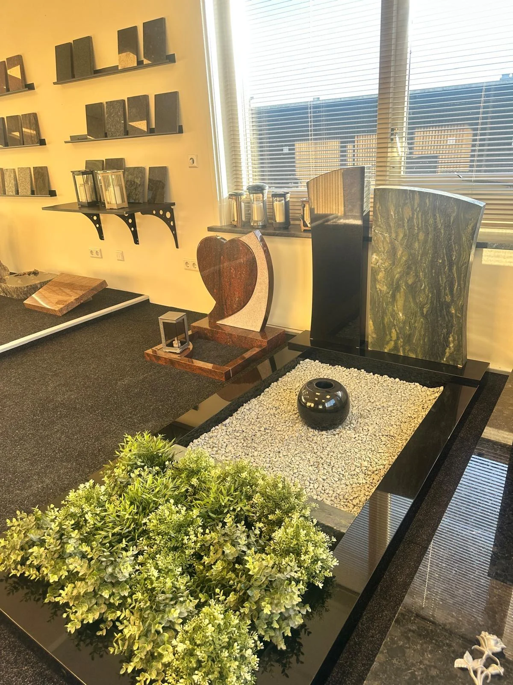

Persoonlijke begeleidingWij begeleiden u bij iedere stap
Maatwerk grafstenen
Een blijvende herinnering,
met liefde ontworpen.
Wij begeleiden families met aandacht en respect. Samen creëren we een persoonlijk gedenkteken dat herinnering, waardigheid en identiteit weerspiegelt.
Premium natuursteenDuurzaam en van topkwaliteit
Professionele plaatsingVakkundig en met zorg geplaatst
Maatwerk ontwerpUniek ontwerp volgens uw wensen
Vrijblijvend adviesEerlijk, transparant en persoonlijk
Over Universum Soul
Ambacht, respect en persoonlijke aandacht
De familie deelt haar wensen, ideeën en herinneringen met ons. Wij begeleiden iedere stap, van het eerste gesprek en de materiaalkeuze tot het ontwerp, de productie en de professionele plaatsing.
Zo ontstaat een gedenkteken dat werkelijk past bij de persoon die wordt herdacht, met aandacht voor culturele, religieuze en persoonlijke wensen.
Ontdek onze werkwijze →
Onze werken
Unieke gedenktekens, met liefde ontworpen
Elke afbeelding is een gerealiseerd of tentoongesteld ontwerp uit ons eigen portfolio.
Engel met hart
Rood graniet, gebeeldhouwde engel, hoogglans hart
Gedenkboek
Zwart graniet, boekvorm, bronzen rozen
Dubbel hart
Rood graniet, dubbel monument, natuurlijke beplanting
Modern natuursteen
Grijs natuursteen, organische lijnen, groenaccent
Hoogglans zwart
Zwart graniet, strakke lijnen, geïntegreerde vaas
Glazen foto monument
Volglas, persoonlijke afbeelding, moderne typografie
Glazen roos
Gebogen glas, lijnillustratie, verfijnde afwerking
Islamitisch rood graniet
Arabische kalligrafie, maansymbool, gepolijste steen
Dubbel grafmonument
Rood graniet, symmetrische indeling, decoratieve stenen
Islamitische gedenkplaat
Gepolijst zwart natuursteen, Arabische inscriptie en minimalistische RVS bevestiging.
Onze granietsoorten
Kies de natuursteen die het beste past bij uw monument
Wij werken met zorgvuldig geselecteerde granietsoorten van internationale kwaliteit. Iedere steensoort heeft een eigen kleur, structuur en karakter. Tijdens het ontwerpproces adviseren wij u persoonlijk over duurzaamheid, onderhoud, uitstraling en budget.
Kleuren en structuren kunnen door natuurlijke variatie en beeldscherminstellingen licht afwijken. Andere natuursteensoorten zijn op aanvraag leverbaar.
Baltic Brown Granite
Warme bruin-zwarte graniet met een levendige, natuurlijke structuur. Zeer geschikt voor klassieke en duurzame grafmonumenten.
Himalaya Blue Granite
Diepe blauwbruine graniet met karaktervolle aders. Een sterke keuze voor een monument met een exclusieve uitstraling.
Red Multi Granite + Kashmir White
Een opvallende combinatie van rood graniet en licht natuursteen, geschikt voor een uniek en persoonlijk ontwerp.
Indian Red Granite
Krachtige roodbruine graniet met een warme uitstraling. Veel gekozen voor traditionele en islamitische grafmonumenten.
Tiger Red Granite
Levendige roodbruine graniet met donkere nuances. Geeft het monument een uitgesproken en luxe karakter.
Tan Brown Granite
Donkerbruine graniet met warme koperkleurige accenten. Onderhoudsvriendelijk en bijzonder duurzaam.
Black Galaxy Granite
Diepzwarte graniet met subtiele goudkleurige kristallen. Zeer populair voor luxe en moderne grafmonumenten.
Maple Red Granite
Donkerrode graniet met een rijke structuur. Een stijlvolle keuze voor een monument met warmte en diepte.
Vizag Blue Granite
Grijsblauwe graniet met natuurlijke beweging en bijzondere aders. Elegant, modern en tijdloos.
Shivakashi Gold Granite
Lichte goudbeige graniet met warme patronen. Past uitstekend bij zachte, klassieke en verfijnde ontwerpen.
Golden Beach Granite
Zandkleurige graniet met rustige nuances. Geeft het monument een natuurlijke en vriendelijke uitstraling.
Silver Pearl Granite
Lichtgrijze graniet met een moderne, rustige textuur. Zeer geschikt voor minimalistische monumenten.
White Sardinia Granite
Heldere witgrijze graniet met fijne zwarte structuren. Tijdloos, fris en bijzonder veelzijdig.
Paradiso Classico Granite
Luxe natuursteen met golvende goudbruine en donkere lijnen. Ideaal voor exclusieve maatwerkontwerpen.

Islamitische grafmonumenten
Respect voor traditie, ruimte voor persoonlijk maatwerk
Wij begrijpen hoe belangrijk het is om islamitische waarden en familiewensen zorgvuldig te combineren. Ontwerpen kunnen worden uitgevoerd met Arabische kalligrafie, religieuze symboliek en tweetalige belettering.
Arabische kalligrafieTweetalige tekstPersoonlijk ontwerpRespectvolle uitvoering
Bespreek uw wensenMaterialen en afwerking
Een uitstraling die past bij het ontwerp
Graniet
Duurzaam, sterk en onderhoudsarm
Marmer
Luxe uitstraling en tijdloos karakter
Natuursteen
Unieke structuur en natuurlijke variatie
Brons
Letters, rozen en decoratieve ornamenten
RVS
Modern, strak en roestbestendig
Glas
Persoonlijke afbeeldingen en verfijnde details
Onze werkwijze
Van eerste gesprek tot zorgvuldige plaatsing
Kennismaking
Wij luisteren naar uw wensen, verhaal en budget.
Ontwerp
Uw ideeën worden vertaald naar een uniek ontwerp.
Materiaalkeuze
We kiezen samen steen, kleur en accessoires.
Productie
Het monument wordt met precisie vervaardigd.
Plaatsing
Professionele en respectvolle montage op locatie.
Prijzen
Een heldere prijsindicatie, zonder verrassingen
De prijs van een grafmonument hangt af van het materiaal, formaat, ontwerp, belettering, accessoires en de plaatsing. Daarom ontvangt u een persoonlijke prijsindicatie op basis van uw wensen.
Vraag prijsindicatie aanVeelgestelde vragen
Duidelijke antwoorden op belangrijke vragen
Kan ieder monument volledig worden aangepast?
Ja. Vorm, materiaal, kleur, tekst, symbolen en accessoires kunnen binnen de technische mogelijkheden persoonlijk worden samengesteld.
Maken jullie islamitische grafmonumenten?
Ja. Wij kunnen ontwerpen maken met Arabische kalligrafie, tweetalige belettering en een vormgeving die aansluit bij islamitische en familiale wensen.
Hoe lang duurt het volledige proces?
De doorlooptijd hangt af van het ontwerp, de materiaalbeschikbaarheid en de voorwaarden van de begraafplaats. U ontvangt vooraf een duidelijke indicatie.
Verzorgen jullie ook de plaatsing?
Ja. De levering en professionele plaatsing kunnen als onderdeel van het traject worden verzorgd.
Kan ik eerst vrijblijvend advies krijgen?
Ja. Via WhatsApp of e-mail kunt u uw wensen delen en bespreken we de mogelijkheden zonder verplichting.
Is onderhoud nodig?
Dat verschilt per materiaal. Wij adviseren u over onderhoud, duurzaamheid en geschikte afwerkingen.
Vrijblijvende offerte
Ontvang een persoonlijke prijsindicatie
Vertel ons kort wat u zoekt. Wij nemen uw wensen zorgvuldig door en reageren persoonlijk met de mogelijkheden voor materiaal, ontwerp en afwerking.
- Persoonlijk advies zonder verplichtingen
- Heldere uitleg over materiaal en kosten
- Ontwerp afgestemd op traditie en persoonlijke wensen
- Snelle reactie via WhatsApp
Officieel geregistreerd bij de Kamer van Koophandel, KvK: 83897275.